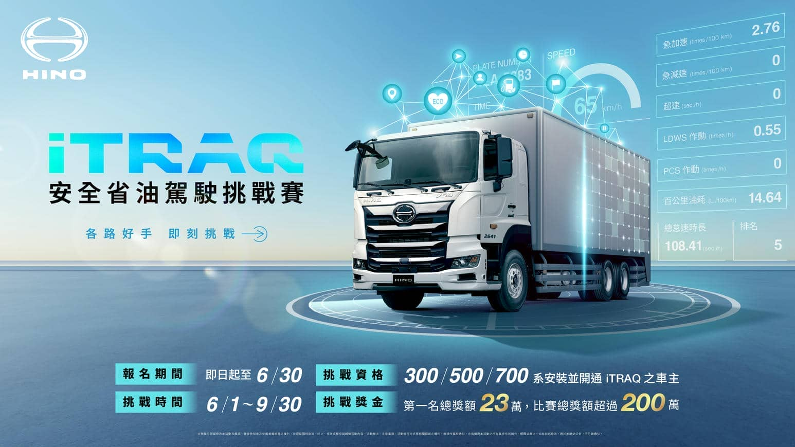
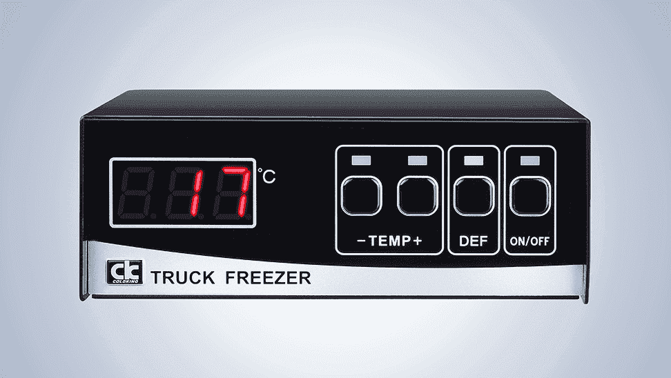
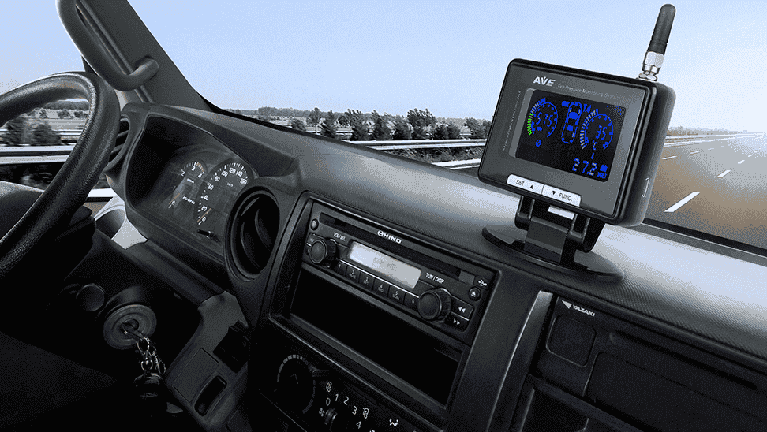
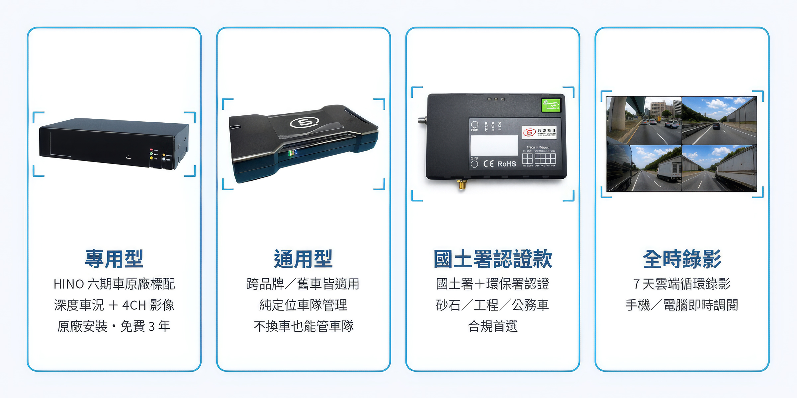

車輛定位Tracking
即時掌握每台車輛位置，清晰的目視化設計讓您全盤掌握車輛狀態與駕駛資訊。

立即報名參與利用科技聯網、多工整合系統，達成智能車隊管理
即時掌握每台車輛位置，清晰的目視化設計讓您全盤掌握車輛狀態與駕駛資訊。
相容多品牌車輛，
單一平台、多元整合。
可擴充，即時監控車廂溫度。
可擴充，即時監控車輛胎壓、胎溫。
HINO 500系、700系專屬，透過影像辨識技術提醒不良駕駛行為。


